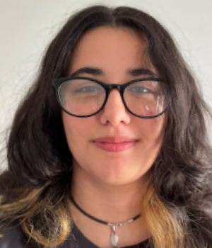

Building full-stack applications, crafting immersive game worlds, and writing the stories that live inside them.
A ragebait puzzle game where you play as a QA tester sucked into the game they're testing. Made for ACM Game Jam Spring 2026.
Archive. Record. Connect. — a MERN stack web app for gamers to showcase their identity, track favorites, and discover new titles.
A 6-book fantasy universe spanning two duologies, a standalone, and a short story collection. Maps, factions, lore, and counting.